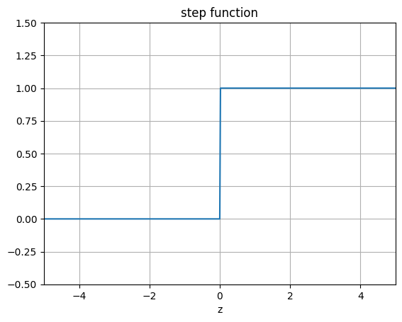
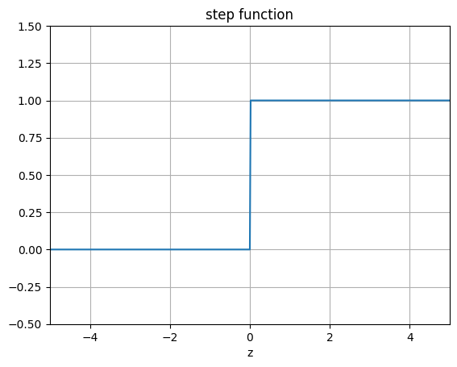

Exercises Week 42: Logistic Regression and Optimization, reminders from week 38 and week 40#
Morten Hjorth-Jensen, Department of Physics and Center for Computing in Science Education, University of Oslo and Department of Physics and Astronomy and Facility for Rare Isotope Beams, Michigan State University
Date: October 14-18, 2024
The logistic function#
A widely studied model, is the perceptron model, which is an example of a “hard classification” model. We have used this model when we discussed neural networks as well. Each datapoint is deterministically assigned to a category (i.e \(y_i=0\) or \(y_i=1\)). In many cases it is favorable to have a “soft” classifier that outputs the probability of a given category rather than a single value. For example, given \(x_i\), the classifier outputs the probability of being in a category \(k\). Logistic regression is the most common example of a so-called soft classifier. In logistic regression, the probability that a data point \(x_i\) belongs to a category \(y_i=\{0,1\}\) is given by the so-called logit function (or Sigmoid) which is meant to represent the likelihood for a given event,
Note that \(1-p(t)= p(-t)\).
Examples of likelihood functions used in logistic regression and nueral networks#
The following code plots the logistic function, the step function and other functions we will encounter from here and on.
%matplotlib inline
"""The sigmoid function (or the logistic curve) is a
function that takes any real number, z, and outputs a number (0,1).
It is useful in neural networks for assigning weights on a relative scale.
The value z is the weighted sum of parameters involved in the learning algorithm."""
import numpy
import matplotlib.pyplot as plt
import math as mt
z = numpy.arange(-5, 5, .1)
sigma_fn = numpy.vectorize(lambda z: 1/(1+numpy.exp(-z)))
sigma = sigma_fn(z)
fig = plt.figure()
ax = fig.add_subplot(111)
ax.plot(z, sigma)
ax.set_ylim([-0.1, 1.1])
ax.set_xlim([-5,5])
ax.grid(True)
ax.set_xlabel('z')
ax.set_title('sigmoid function')
plt.show()
"""Step Function"""
z = numpy.arange(-5, 5, .02)
step_fn = numpy.vectorize(lambda z: 1.0 if z >= 0.0 else 0.0)
step = step_fn(z)
fig = plt.figure()
ax = fig.add_subplot(111)
ax.plot(z, step)
ax.set_ylim([-0.5, 1.5])
ax.set_xlim([-5,5])
ax.grid(True)
ax.set_xlabel('z')
ax.set_title('step function')
plt.show()
"""tanh Function"""
z = numpy.arange(-2*mt.pi, 2*mt.pi, 0.1)
t = numpy.tanh(z)
fig = plt.figure()
ax = fig.add_subplot(111)
ax.plot(z, t)
ax.set_ylim([-1.0, 1.0])
ax.set_xlim([-2*mt.pi,2*mt.pi])
ax.grid(True)
ax.set_xlabel('z')
ax.set_title('tanh function')
plt.show()
 


Two parameters#
We assume now that we have two classes with \(y_i\) either \(0\) or \(1\). Furthermore we assume also that we have only two parameters \(\beta\) in our fitting of the Sigmoid function, that is we define probabilities
where \(\boldsymbol{\beta}\) are the weights we wish to extract from data, in our case \(\beta_0\) and \(\beta_1\).
Note that we used
The cost function#
Reordering the logarithms, we can rewrite the cost/loss function as
The maximum likelihood estimator is defined as the set of parameters that maximize the log-likelihood where we maximize with respect to \(\beta\). Since the cost (error) function is just the negative log-likelihood, for logistic regression we have that
This equation is known in statistics as the cross entropy. Finally, we note that just as in linear regression, in practice we often supplement the cross-entropy with additional regularization terms, usually \(L_1\) and \(L_2\) regularization as we did for Ridge and Lasso regression.
Minimizing the cross entropy#
The cross entropy is a convex function of the weights \(\boldsymbol{\beta}\) and, therefore, any local minimizer is a global minimizer.
Minimizing this cost function with respect to the two parameters \(\beta_0\) and \(\beta_1\) we obtain
and
A more compact expression#
Let us now define a vector \(\boldsymbol{y}\) with \(n\) elements \(y_i\), an \(n\times p\) matrix \(\boldsymbol{X}\) which contains the \(x_i\) values and a vector \(\boldsymbol{p}\) of fitted probabilities \(p(y_i\vert x_i,\boldsymbol{\beta})\). We can rewrite in a more compact form the first derivative of cost function as
If we in addition define a diagonal matrix \(\boldsymbol{W}\) with elements \(p(y_i\vert x_i,\boldsymbol{\beta})(1-p(y_i\vert x_i,\boldsymbol{\beta})\), we can obtain a compact expression of the second derivative as
Extending to more predictors#
Within a binary classification problem, we can easily expand our model to include multiple predictors. Our ratio between likelihoods is then with \(p\) predictors
Here we defined \(\boldsymbol{x}=[1,x_1,x_2,\dots,x_p]\) and \(\boldsymbol{\beta}=[\beta_0, \beta_1, \dots, \beta_p]\) leading to
Including more classes#
Till now we have mainly focused on two classes, the so-called binary system. Suppose we wish to extend to \(K\) classes. Let us for the sake of simplicity assume we have only two predictors. We have then following model
and
and so on till the class \(C=K-1\) class
and the model is specified in term of \(K-1\) so-called log-odds or logit transformations.
More classes#
In our discussion of neural networks we will encounter the above again in terms of a slightly modified function, the so-called Softmax function.
The softmax function is used in various multiclass classification methods, such as multinomial logistic regression (also known as softmax regression), multiclass linear discriminant analysis, naive Bayes classifiers, and artificial neural networks. Specifically, in multinomial logistic regression and linear discriminant analysis, the input to the function is the result of \(K\) distinct linear functions, and the predicted probability for the \(k\)-th class given a sample vector \(\boldsymbol{x}\) and a weighting vector \(\boldsymbol{\beta}\) is (with two predictors):
It is easy to extend to more predictors. The final class is
and they sum to one.
Wisconsin Cancer Data#
We show here how we can use a simple regression case on the breast cancer data using Logistic regression as our algorithm for classification.
import matplotlib.pyplot as plt
import numpy as np
from sklearn.model_selection import train_test_split
from sklearn.datasets import load_breast_cancer
from sklearn.linear_model import LogisticRegression
# Load the data
cancer = load_breast_cancer()
X_train, X_test, y_train, y_test = train_test_split(cancer.data,cancer.target,random_state=0)
print(X_train.shape)
print(X_test.shape)
# Logistic Regression
logreg = LogisticRegression(solver='lbfgs')
logreg.fit(X_train, y_train)
print("Test set accuracy with Logistic Regression: {:.2f}".format(logreg.score(X_test,y_test)))
(426, 30)
(143, 30)
Test set accuracy with Logistic Regression: 0.94
/Users/mhjensen/miniforge3/envs/myenv/lib/python3.9/site-packages/sklearn/linear_model/_logistic.py:460: ConvergenceWarning: lbfgs failed to converge (status=1):
STOP: TOTAL NO. of ITERATIONS REACHED LIMIT.
Increase the number of iterations (max_iter) or scale the data as shown in:
https://scikit-learn.org/stable/modules/preprocessing.html
Please also refer to the documentation for alternative solver options:
https://scikit-learn.org/stable/modules/linear_model.html#logistic-regression
n_iter_i = _check_optimize_result(
Using the correlation matrix#
In addition to the above scores, we could also study the covariance (and the correlation matrix). We use Pandas to compute the correlation matrix.
import matplotlib.pyplot as plt
import numpy as np
from sklearn.model_selection import train_test_split
from sklearn.datasets import load_breast_cancer
from sklearn.linear_model import LogisticRegression
cancer = load_breast_cancer()
import pandas as pd
# Making a data frame
cancerpd = pd.DataFrame(cancer.data, columns=cancer.feature_names)
fig, axes = plt.subplots(15,2,figsize=(10,20))
malignant = cancer.data[cancer.target == 0]
benign = cancer.data[cancer.target == 1]
ax = axes.ravel()
for i in range(30):
_, bins = np.histogram(cancer.data[:,i], bins =50)
ax[i].hist(malignant[:,i], bins = bins, alpha = 0.5)
ax[i].hist(benign[:,i], bins = bins, alpha = 0.5)
ax[i].set_title(cancer.feature_names[i])
ax[i].set_yticks(())
ax[0].set_xlabel("Feature magnitude")
ax[0].set_ylabel("Frequency")
ax[0].legend(["Malignant", "Benign"], loc ="best")
fig.tight_layout()
plt.show()
import seaborn as sns
correlation_matrix = cancerpd.corr().round(1)
# use the heatmap function from seaborn to plot the correlation matrix
# annot = True to print the values inside the square
plt.figure(figsize=(15,8))
sns.heatmap(data=correlation_matrix, annot=True)
plt.show()

Discussing the correlation data#
In the above example we note two things. In the first plot we display the overlap of benign and malignant tumors as functions of the various features in the Wisconsing breast cancer data set. We see that for some of the features we can distinguish clearly the benign and malignant cases while for other features we cannot. This can point to us which features may be of greater interest when we wish to classify a benign or not benign tumour.
In the second figure we have computed the so-called correlation matrix, which in our case with thirty features becomes a \(30\times 30\) matrix.
We constructed this matrix using pandas via the statements
cancerpd = pd.DataFrame(cancer.data, columns=cancer.feature_names)
and then
correlation_matrix = cancerpd.corr().round(1)
Diagonalizing this matrix we can in turn say something about which features are of relevance and which are not. This leads us to the classical Principal Component Analysis (PCA) theorem with applications. This will be discussed later this semester (week 43).
Other measures in classification studies: Cancer Data again#
import matplotlib.pyplot as plt
import numpy as np
from sklearn.model_selection import train_test_split
from sklearn.datasets import load_breast_cancer
from sklearn.linear_model import LogisticRegression
# Load the data
cancer = load_breast_cancer()
X_train, X_test, y_train, y_test = train_test_split(cancer.data,cancer.target,random_state=0)
print(X_train.shape)
print(X_test.shape)
# Logistic Regression
logreg = LogisticRegression(solver='lbfgs')
logreg.fit(X_train, y_train)
from sklearn.preprocessing import LabelEncoder
from sklearn.model_selection import cross_validate
#Cross validation
accuracy = cross_validate(logreg,X_test,y_test,cv=10)['test_score']
print(accuracy)
print("Test set accuracy with Logistic Regression: {:.2f}".format(logreg.score(X_test,y_test)))
import scikitplot as skplt
y_pred = logreg.predict(X_test)
skplt.metrics.plot_confusion_matrix(y_test, y_pred, normalize=True)
plt.show()
y_probas = logreg.predict_proba(X_test)
skplt.metrics.plot_roc(y_test, y_probas)
plt.show()
skplt.metrics.plot_cumulative_gain(y_test, y_probas)
plt.show()
(426, 30)
(143, 30)
[1. 0.86666667 1. 0.85714286 1. 0.85714286
1. 0.92857143 0.92857143 1. ]
Test set accuracy with Logistic Regression: 0.94
/Users/mhjensen/miniforge3/envs/myenv/lib/python3.9/site-packages/sklearn/linear_model/_logistic.py:460: ConvergenceWarning: lbfgs failed to converge (status=1):
STOP: TOTAL NO. of ITERATIONS REACHED LIMIT.
Increase the number of iterations (max_iter) or scale the data as shown in:
https://scikit-learn.org/stable/modules/preprocessing.html
Please also refer to the documentation for alternative solver options:
https://scikit-learn.org/stable/modules/linear_model.html#logistic-regression
n_iter_i = _check_optimize_result(
/Users/mhjensen/miniforge3/envs/myenv/lib/python3.9/site-packages/sklearn/linear_model/_logistic.py:460: ConvergenceWarning: lbfgs failed to converge (status=1):
STOP: TOTAL NO. of ITERATIONS REACHED LIMIT.
Increase the number of iterations (max_iter) or scale the data as shown in:
https://scikit-learn.org/stable/modules/preprocessing.html
Please also refer to the documentation for alternative solver options:
https://scikit-learn.org/stable/modules/linear_model.html#logistic-regression
n_iter_i = _check_optimize_result(
/Users/mhjensen/miniforge3/envs/myenv/lib/python3.9/site-packages/sklearn/linear_model/_logistic.py:460: ConvergenceWarning: lbfgs failed to converge (status=1):
STOP: TOTAL NO. of ITERATIONS REACHED LIMIT.
Increase the number of iterations (max_iter) or scale the data as shown in:
https://scikit-learn.org/stable/modules/preprocessing.html
Please also refer to the documentation for alternative solver options:
https://scikit-learn.org/stable/modules/linear_model.html#logistic-regression
n_iter_i = _check_optimize_result(
/Users/mhjensen/miniforge3/envs/myenv/lib/python3.9/site-packages/sklearn/linear_model/_logistic.py:460: ConvergenceWarning: lbfgs failed to converge (status=1):
STOP: TOTAL NO. of ITERATIONS REACHED LIMIT.
Increase the number of iterations (max_iter) or scale the data as shown in:
https://scikit-learn.org/stable/modules/preprocessing.html
Please also refer to the documentation for alternative solver options:
https://scikit-learn.org/stable/modules/linear_model.html#logistic-regression
n_iter_i = _check_optimize_result(
/Users/mhjensen/miniforge3/envs/myenv/lib/python3.9/site-packages/sklearn/linear_model/_logistic.py:460: ConvergenceWarning: lbfgs failed to converge (status=1):
STOP: TOTAL NO. of ITERATIONS REACHED LIMIT.
Increase the number of iterations (max_iter) or scale the data as shown in:
https://scikit-learn.org/stable/modules/preprocessing.html
Please also refer to the documentation for alternative solver options:
https://scikit-learn.org/stable/modules/linear_model.html#logistic-regression
n_iter_i = _check_optimize_result(
/Users/mhjensen/miniforge3/envs/myenv/lib/python3.9/site-packages/sklearn/linear_model/_logistic.py:460: ConvergenceWarning: lbfgs failed to converge (status=1):
STOP: TOTAL NO. of ITERATIONS REACHED LIMIT.
Increase the number of iterations (max_iter) or scale the data as shown in:
https://scikit-learn.org/stable/modules/preprocessing.html
Please also refer to the documentation for alternative solver options:
https://scikit-learn.org/stable/modules/linear_model.html#logistic-regression
n_iter_i = _check_optimize_result(
/Users/mhjensen/miniforge3/envs/myenv/lib/python3.9/site-packages/sklearn/linear_model/_logistic.py:460: ConvergenceWarning: lbfgs failed to converge (status=1):
STOP: TOTAL NO. of ITERATIONS REACHED LIMIT.
Increase the number of iterations (max_iter) or scale the data as shown in:
https://scikit-learn.org/stable/modules/preprocessing.html
Please also refer to the documentation for alternative solver options:
https://scikit-learn.org/stable/modules/linear_model.html#logistic-regression
n_iter_i = _check_optimize_result(
/Users/mhjensen/miniforge3/envs/myenv/lib/python3.9/site-packages/sklearn/linear_model/_logistic.py:460: ConvergenceWarning: lbfgs failed to converge (status=1):
STOP: TOTAL NO. of ITERATIONS REACHED LIMIT.
Increase the number of iterations (max_iter) or scale the data as shown in:
https://scikit-learn.org/stable/modules/preprocessing.html
Please also refer to the documentation for alternative solver options:
https://scikit-learn.org/stable/modules/linear_model.html#logistic-regression
n_iter_i = _check_optimize_result(
/Users/mhjensen/miniforge3/envs/myenv/lib/python3.9/site-packages/sklearn/linear_model/_logistic.py:460: ConvergenceWarning: lbfgs failed to converge (status=1):
STOP: TOTAL NO. of ITERATIONS REACHED LIMIT.
Increase the number of iterations (max_iter) or scale the data as shown in:
https://scikit-learn.org/stable/modules/preprocessing.html
Please also refer to the documentation for alternative solver options:
https://scikit-learn.org/stable/modules/linear_model.html#logistic-regression
n_iter_i = _check_optimize_result(
/Users/mhjensen/miniforge3/envs/myenv/lib/python3.9/site-packages/sklearn/linear_model/_logistic.py:460: ConvergenceWarning: lbfgs failed to converge (status=1):
STOP: TOTAL NO. of ITERATIONS REACHED LIMIT.
Increase the number of iterations (max_iter) or scale the data as shown in:
https://scikit-learn.org/stable/modules/preprocessing.html
Please also refer to the documentation for alternative solver options:
https://scikit-learn.org/stable/modules/linear_model.html#logistic-regression
n_iter_i = _check_optimize_result(
/Users/mhjensen/miniforge3/envs/myenv/lib/python3.9/site-packages/sklearn/linear_model/_logistic.py:460: ConvergenceWarning: lbfgs failed to converge (status=1):
STOP: TOTAL NO. of ITERATIONS REACHED LIMIT.
Increase the number of iterations (max_iter) or scale the data as shown in:
https://scikit-learn.org/stable/modules/preprocessing.html
Please also refer to the documentation for alternative solver options:
https://scikit-learn.org/stable/modules/linear_model.html#logistic-regression
n_iter_i = _check_optimize_result(


Gradient descent and Logistic regression#
We complete these examples by adding a simple code for Logistic regression. Note the more general approach with a class for the method. Here we use a so-called AND gate for our data set.
import numpy as np
class LogisticRegression:
def __init__(self, learning_rate=0.01, num_iterations=1000):
self.learning_rate = learning_rate
self.num_iterations = num_iterations
self.beta_logreg = None
def sigmoid(self, z):
return 1 / (1 + np.exp(-z))
def GDfit(self, X, y):
n_data, num_features = X.shape
self.beta_logreg = np.zeros(num_features)
for _ in range(self.num_iterations):
linear_model = X @ self.beta_logreg
y_predicted = self.sigmoid(linear_model)
# Gradient calculation
gradient = (X.T @ (y_predicted - y))/n_data
# Update beta_logreg
self.beta_logreg -= self.learning_rate*gradient
def predict(self, X):
linear_model = X @ self.beta_logreg
y_predicted = self.sigmoid(linear_model)
return [1 if i >= 0.5 else 0 for i in y_predicted]
# Example usage
if __name__ == "__main__":
# Sample data
X = np.array([[0, 0], [1, 0], [0, 1], [1, 1]])
y = np.array([0, 0, 0, 1]) # This is an AND gate
model = LogisticRegression(learning_rate=0.01, num_iterations=1000)
model.GDfit(X, y)
predictions = model.predict(X)
print("Predictions:", predictions)
Predictions: [1, 1, 1, 1]